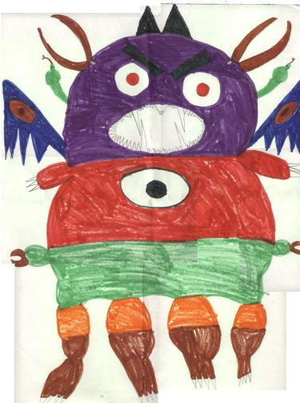

Monster, Monster

My monster's name is Colbra Striker. He has a purple head, and a red and
green body. He has 26 eyes, 13 in front and 13 in back. And he has two colbras
on the side of his head and he also has two laser beaks on his head. He has
13 rows of teeth. In the middle of his teeth he has a tooth that poison can
come out of. He likes to look in school windows and scare the teachers till
they turn white. His favorite things are pinetrees because he plays catch
with them. His favorite food is iron, shaped like little circles with ketchup
and melted rubber. His midnight snack is bricks covered with hot fudge. His
favorite dessert is ice-cream with green wax on top.